WDMS란?
모빌리티 산업 전 과정을 아우르는 올인원 디지털 플랫폼입니다. 차량 운영·정비·딜러 관리·대고객 서비스를 단일 환경에서 통합 지원합니다. 기업은 서비스 품질과 경쟁력을 강화해 모빌리티 시장 변화를 선도할 수 있습니다.
국내 유일 엔터프라이즈급 모빌리티 특화 솔루션 WDMS
WDMS는 자동차 수입/판매관리, 딜러사 영업/정비관리, 대고객 편의 온라인 서비스, 스마트 모빌리티 생태계 기업을 위한 IT 서비스를 제공합니다. 웅진은 국내에서 유일하게 엔터프라이즈급 모빌리티 솔루션을 제공하고 있으며, 이미 글로벌 대형 기업들로부터 기술력과 안정성을 인정받아 수준 높은 전문성을 제공합니다.
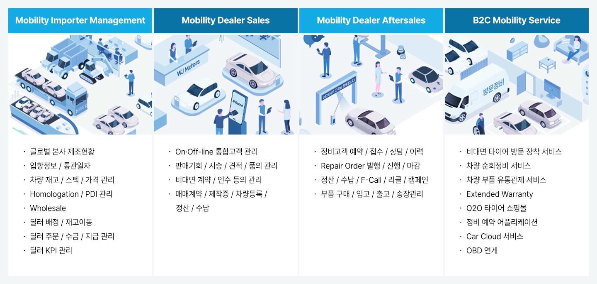
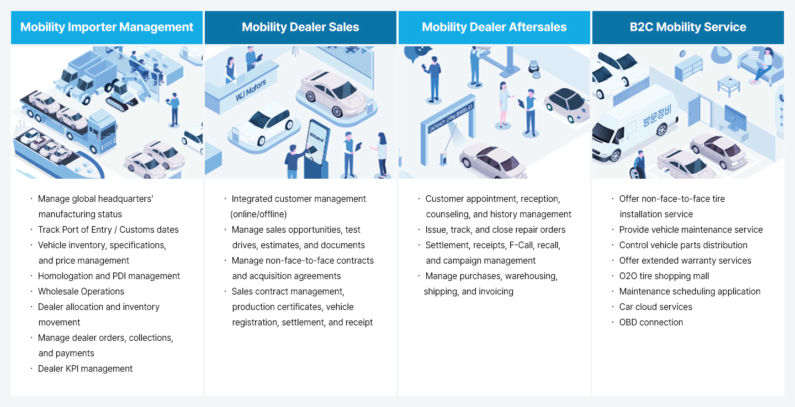
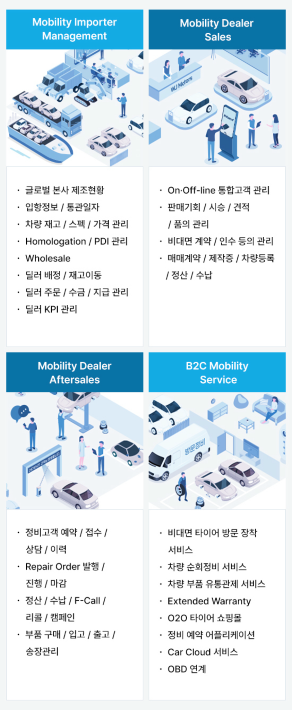
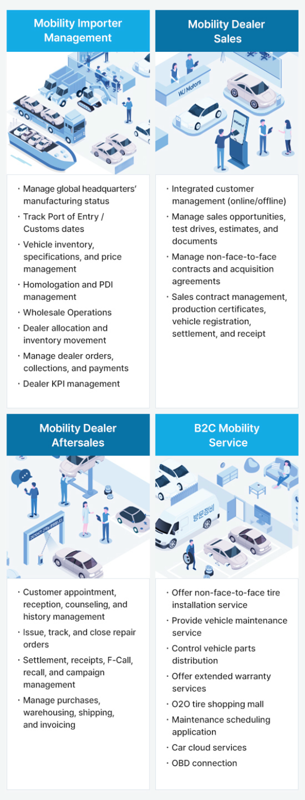
솔루션 구성
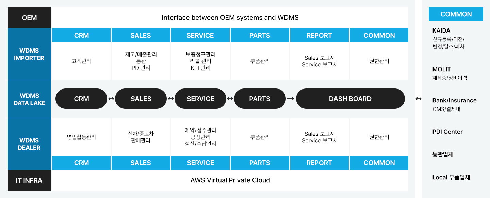
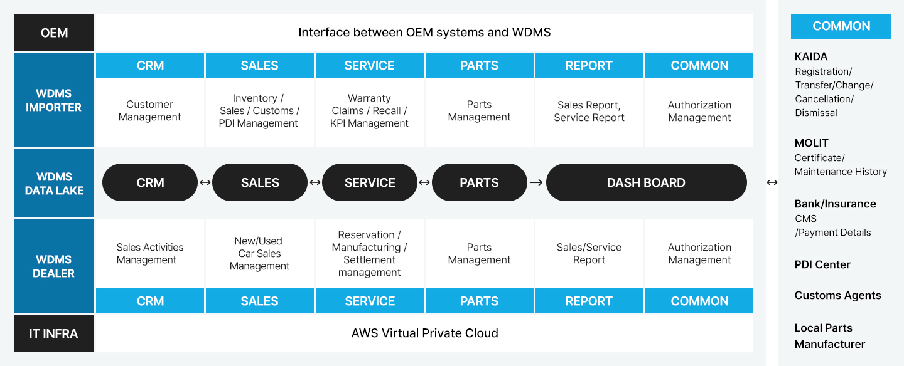
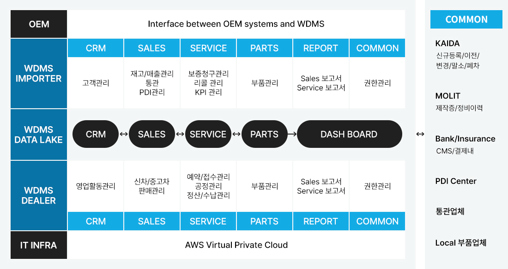
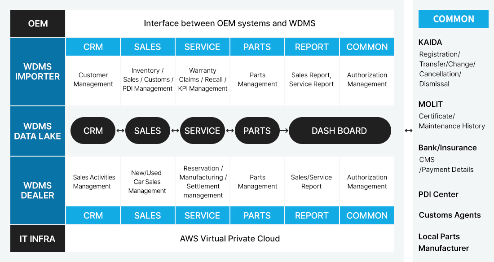
글로벌 모빌리티 기업이 인증한 웅진의 IT 솔루션
유수의 글로벌 모빌리티 기업들이 인정한 WDMS는 프로젝트를 성공적으로 완수하며 Mobility 산업 분야에 독보적인 역량을 쌓았습니다. 세계 최고 수준의 IMS / DMS 전문가로 구성된 웅진은 고객의 성공적인 디지털화를 위해 IMS / DMS Best Practice와 Customizing 전략을 제공합니다.
AI로 더욱 스마트해진 WDMS
WDMS는 모빌리티 정비 이력, 고객 프로필, 캠페인 등 실제 운영 데이터를 기반으로 AI를 접목해 정비·영업·운영 전 과정에서 더 정교한 업무 경험을 제공합니다. 이를 통해 고객 만족도와 비즈니스 성과를 동시에 향상시킵니다.
WDMS AI 주요 기능
모빌리티에 최적화된 솔루션 WDMS
WDMS는 사용자의 니즈와 경영자 관점에서 시스템 활용도가 충분히 반영된 모빌리티 특화 솔루션입니다. 해외 시스템 대비 국내 환경에 맞는 UX/UI를 적용해 국내 현장 업무의 편리함과 빠른 업무 처리 중심으로 설계되었으며, 경영진의 명확한 의사결정을 지원할 수 있는 국내 유일 엔터프라이즈급 모빌리티 특화 솔루션입니다.
1.솔루션 특장점
WDMS는 최고의 성능과 높은 유연성으로 빠르게 변화하는 시장에서 경쟁 우위를 확보할 수 있는 가치 있는 기능을 제공합니다.
2. 도입 효과
다양한 업무에 유연하게 대응할 수 있는 최적화된 통합 업무 환경을 통해 운영의 효율성을 확보하고 성과를 개선하여 디지털 경영으로의 성공적인 혁신을 가속화할 수 있습니다.
WDMS, Certified Technology
웅진은 국내 최초로 BMW 그룹 코리아와 독일 본사간의 실시간 정보 교류를 가능하게 한 국내 최초 인증 허가를 보유하고 있으며, 국제 표준 정보보안 관리 및 클라우드 서비스 정보보호 인증을 보유하고 있습니다.
BMW Korea RIS Certification
국제 표준 보안 인증 ISO 27001 & 27017
WDMS 운영 전략
WDMS의 운영 전담 조직은 시스템의 안정적인 상태를 유지하고 환경 변화에 따른 사용자 요구사항을 반영하기 위해 지속적으로 활동합니다. 또한 정기적인 예방 정비 활동을 통해 장애 요인을 사전에 제거하여 업무 연속성을 확보하고 시스템 가용성을 향상 시킬 수 있도록 지원합니다.
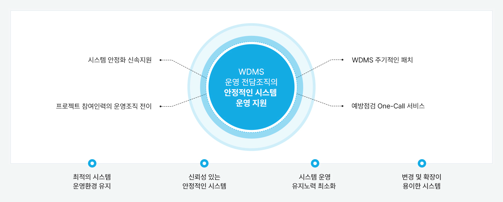
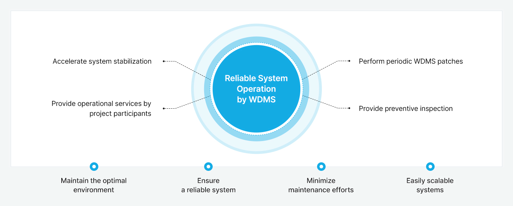
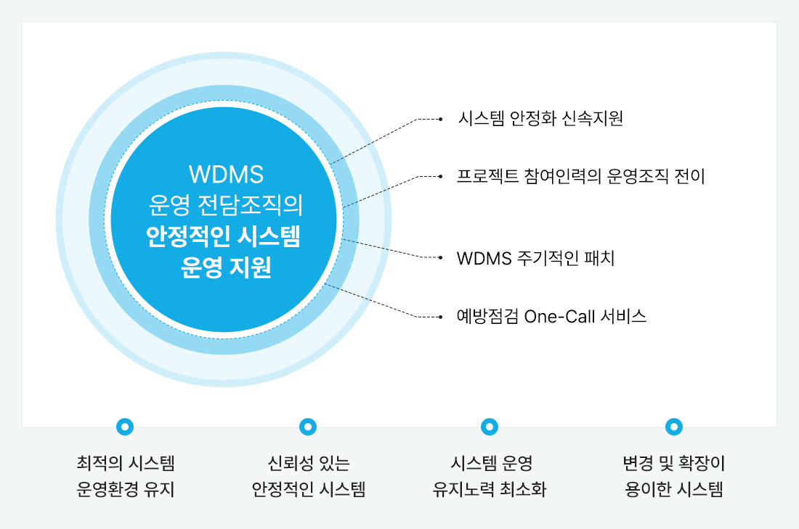
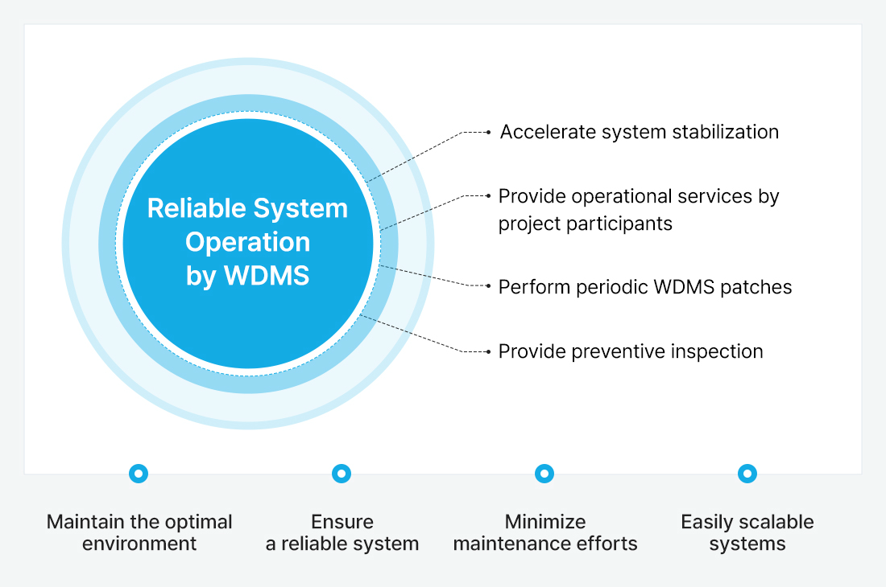
글로벌 기업이 선택한 웅진
독보적인 역량의 IT 솔루션인 WDMS는 유수의 글로벌 기업들과 함께 가치를 만들어 가고 있습니다.
- BMW
- Rolls-Royce
- MINI
- BMW
MOTORRAD - GENESIS
- Volkswagen
- Audi
- LAND ROVER
- LAMBORGHINI
- HYUNDAI
- KIA
- JAGUAR
- 北京现代
- KG MOBILITY
- NEXEN
- Hyundai Capital
- LOTTE Autocare
- ASTON MARTIN
- McLaren